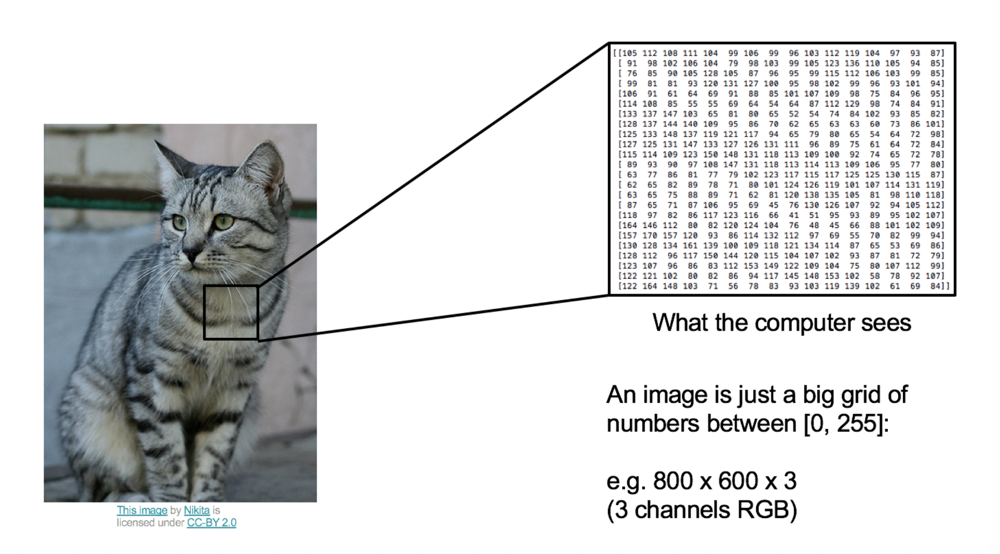
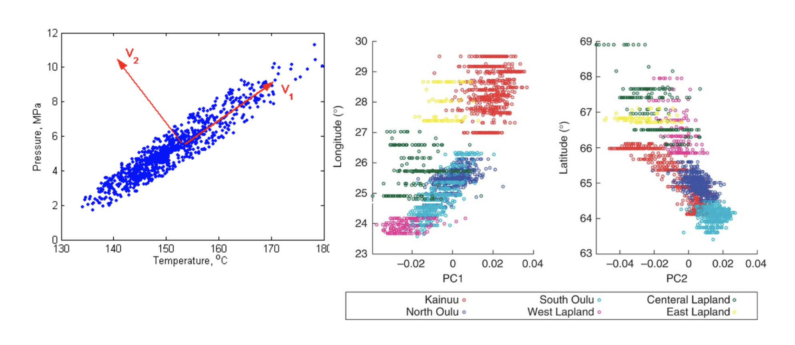
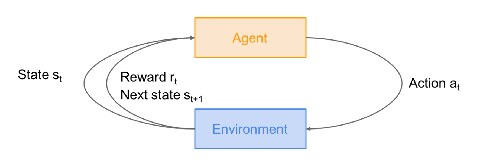
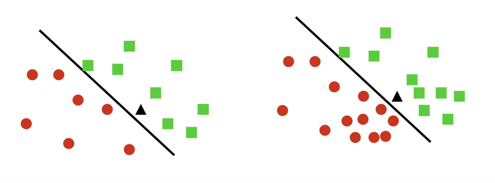

1. Introduction
- 이번 포스트에서는 기계학습(Machine Learning, ML) 과정의 첫 번째 강의 내용을 정리합니다. 이 강의의 주된 목표는 얕은 학습(Shallow Learning)부터 딥러닝(Deep Learning)에 이르기까지, 연구와 응용에 필요한 알고리즘, 수학, 이론, 그리고 그 이면에 있는 직관(Intuition)을 다지는 것입니다. 또한, 강의 후반부에서는 최신 딥러닝의 핵심인 Transformer의 구현과 학습 과정까지 다룰 예정입니다.
1.1 What is Machine Learning?
- 기계학습이란 근본적으로 데이터 \(x\)로부터 학습하는 알고리즘에 대한 연구입니다. 이를 수학적 함수 관계로 표현하면 다음과 같습니다. \[
x \xrightarrow{f(x)} y
\]
- 여기서 \(x\)는 입력 데이터(Input Data), \(y\)는 우리가 얻고자 하는 출력(Output), 그리고 \(f\)는 데이터로부터 학습된 함수(Model)를 의미합니다.
2. Types of Machine Learning Problems
- 기계학습 문제는 주어진 데이터의 형태와 목표에 따라 크게 세 가지 범주로 나눌 수 있습니다: 지도 학습(Supervised Learning), 비지도 학습(Unsupervised Learning), 그리고 환경과의 상호작용(Interaction with Environments)입니다.
2.1 Supervised Learning (지도 학습)
지도 학습은 정답(Label)이 주어진 상태에서 모델을 학습시키는 방식입니다. 입력 \(x\)와 정답 \(y\)의 쌍(Pair)이 주어졌을 때, 새로운 \(x\)에 대해 \(y\)를 예측하는 함수를 찾는 것이 목표입니다.
Binary/Multiclass Classification (분류)
- 입력 \(x\)가 주어졌을 때, 이산적인(Discrete) 클래스 \(y\)를 찾는 문제입니다. \[y \in \{1, \dots, K\}\]
- \(K\)는 클래스의 개수
- 예: 이메일 스팸 분류(Binary), 손글씨 숫자 인식(Multiclass)
- 입력 \(x\)가 주어졌을 때, 이산적인(Discrete) 클래스 \(y\)를 찾는 문제입니다. \[y \in \{1, \dots, K\}\]
Regression (회귀)
- 입력 \(x\)가 주어졌을 때, 연속적인(Continuous) 실수 값 \(y\)를 예측하는 문제입니다. \[y \in \mathbb{R}^{d}\]
- 예: 주택 가격 예측, 주가 예측
Sequence Annotation
- 입력 시퀀스 \(x_{1}, \dots, x_{n}\)이 주어졌을 때, 이에 대응하는 출력 시퀀스 \(y_{1}, \dots, y_{m}\)을 찾는 문제입니다.
- 예: 품사 태깅(Part-of-Speech Tagging), 개체명 인식
Prediction (Forecasting)
- 과거의 데이터 \(x_{t}\)와 이전 시점까지의 출력 \(y_{1}, \dots, y_{t-1}\)이 주어졌을 때, 현재 시점의 \(y_{t}\)를 예측하는 문제입니다.
- 예: 시계열 분석, 언어 모델의 다음 단어 예측
Case Study: Image Classification
- 이미지 분류 문제를 예로 들어봅시다. 컴퓨터가 이미지를 인식하는 과정은 인간의 직관과는 다릅니다.

Figure 1 설명: 좌측은 사람이 보는 고양이 이미지입니다. 우측은 컴퓨터가 인식하는 동일한 이미지의 데이터 형태입니다. 컴퓨터에게 이미지는 \([0, 255]\) 사이의 숫자로 이루어진 거대한 그리드(Grid)일 뿐입니다. 예를 들어, \(800 \times 600\) 해상도의 컬러 이미지는 \(800 \times 600 \times 3\) (RGB 채널)개의 숫자로 구성된 텐서(Tensor)입니다. 기계학습 모델은 이 숫자 패턴에서 “고양이(Cat)”라는 추상적인 레이블을 도출해내야 합니다.
2.2 Unsupervised Learning (비지도 학습)
비지도 학습은 정답 레이블 \(y\) 없이, 입력 데이터 \(x\) 자체의 구조나 패턴을 학습하는 방식입니다.
Clustering (군집화): 데이터를 대표하는 프로토타입(Prototypes)이나 그룹을 찾습니다.
Sequence Analysis: 관측된 데이터 이면에 존재하는 잠재적인 인과 시퀀스(Latent Causal Sequence)를 찾습니다.
- 대표 모델: HMM(Hidden Markov Model), Kalman Filter
Independent Components / Dictionary Learning: 관측 데이터를 구성하는 독립적인 요인(Factors)들을 찾아냅니다.
- 대표 예시: 칵테일 파티 문제(Cocktail Party Problem) - 여러 목소리가 섞인 오디오에서 개별 화자의 목소리 분리.
Novelty Detection: 데이터 분포에서 벗어난 이상치(Odd one out)를 탐지합니다.
Case Study: Dimensionality Reduction
- 데이터의 차원을 축소하여 시각화하거나 노이즈를 제거하는 것도 비지도 학습의 중요한 응용입니다.

Figure 2 설명: 좌측 그래프는 2차원 평면상의 데이터 분포를 보여주며, 데이터의 분산이 가장 큰 방향인 주성분 벡터 \(V_1, V_2\)를 나타냅니다. 우측 그래프들은 PCA를 통해 고차원 데이터(예: 유전체 데이터)를 저차원(PC1, PC2)으로 투영하여 시각화한 결과입니다. 이를 통해 복잡한 데이터 내의 숨겨진 구조(예: 지리적 위치에 따른 유전적 군집)를 파악할 수 있습니다.
2.3 Interaction with Environments
- 정적인 데이터셋을 학습하는 것을 넘어, 환경과 상호작용하며 데이터를 수집하고 학습하는 방식들입니다.
- Online Learning: 데이터가 순차적으로 들어옵니다. \(x_t\)를 관측하고 \(f(x_t)\)를 예측한 뒤, 실제 \(y_t\)를 관측하여 모델을 업데이트합니다.
- Active Learning: 모델이 학습에 도움이 될 만한 \(x_t\)를 선별하여 라벨 \(y_t\)를 질의(Query)하고, 모델을 개선한 뒤 다음 \(x\)를 선택합니다.
- Bandits (Multi-armed Bandits): 여러 선택지(Arm) 중 하나를 고르고 보상을 받습니다. 상태(State) 개념이 없거나 단일 상태인 강화학습의 특수한 형태로 볼 수 있습니다.
- Reinforcement Learning (RL, 강화학습): 에이전트가 행동을 취하고, 환경이 이에 반응하여 보상과 다음 상태를 반환하는 과정을 반복합니다.
Reinforcement Learning Framework
- 강화학습은 다음과 같은 순환 구조(Loop)를 가집니다.

Figure 3 설명: * Agent: 의사결정을 내리는 주체입니다. * Environment: 에이전트가 상호작용하는 세계입니다. * State (\(s_t\)): 현재 시점 \(t\)에서의 환경의 상태입니다. * Action (\(a_t\)): 에이전트가 상태 \(s_t\)에서 취하는 행동입니다. * Reward (\(r_t\)): 행동에 대한 결과로 환경이 주는 피드백(점수)입니다. * Next State (\(s_{t+1}\)): 행동의 결과로 변환된 새로운 상태입니다.
RL의 대표적인 예시는 다음과 같습니다.
Robot Locomotion:
- Objective: 로봇을 앞으로 이동시키기.
- State: 관절의 각도 및 위치.
- Action: 관절에 가하는 토크(Torque).
- Reward: 넘어지지 않고 앞으로 나아갈 때 양의 보상.
Atari Games / Go (바둑):
- 게임의 화면 픽셀(Atari)이나 바둑판의 돌 위치(Go)가 State가 되며, 게임 승리 또는 점수 획득이 Reward가 됩니다. 특히 바둑의 경우 가능한 상태 공간(State Space)의 크기가 우주적으로 넓기 때문에 효율적인 학습 알고리즘이 필수적입니다.
3. Discriminative vs. Generative Models
- 기계학습 모델은 데이터를 확률적으로 모델링하는 방식에 따라 Discriminative(판별) 모델과 Generative(생성) 모델로 구분됩니다.
3.1 Discriminative Models (판별 모델)
Discriminative 모델은 입력 \(x\)가 주어졌을 때 출력 \(y\)가 나타날 조건부 확률 \(p(y|x)\)를 직접 추정합니다.
특징:
- 데이터의 클래스 간 경계(Decision Boundary)를 찾는 데 집중합니다.
- 데이터의 생성 원리보다는 분류 자체에 최적화되어 있습니다.
- 일반적으로 더 간단한 솔루션을 제공하며, 수렴(Convergence) 속도가 빠르고 분류 성능이 좋은 경향이 있습니다.
- 예: Logistic Regression, SVM, Decision Trees, 일반적인 Neural Networks 분류기.

Figure 4 설명: 서로 다른 두 클래스(동그라미와 네모)를 구분하는 결정 경계(직선)를 보여줍니다. 판별 모델은 데이터가 어떻게 분포하는지(각 군집의 모양)보다는 두 군집을 어떻게 나눌 것인가에 초점을 맞춥니다.
3.2 Generative Models (생성 모델)
Generative 모델은 입력 \(x\)와 출력 \(y\)의 결합 확률 분포 \(p(y, x)\)를 추정합니다.
메커니즘:
- 데이터 \(x\)가 생성되는 확률 분포 \(p(x)\)를 모델링합니다.
- 베이즈 정리(Bayes” Rule)를 사용하여 조건부 확률을 유도할 수 있습니다: \[p(y|x) = \frac{p(y, x)}{p(x)} = \frac{p(x|y)p(y)}{p(x)}\]
특징:
- 데이터의 분포 자체를 학습하므로, 새로운 데이터 \(x\)를 생성(Generation)할 수 있습니다.
- 최근의 Image Generation(Imagen, DALL-E)이나 Large Language Models(LLMs)가 이에 해당합니다.
- 예: Naive Bayes, Gaussian Mixture Models, GANs, Diffusion Models.
Generative AI Examples
- 강의 자료에서는 Generative Model의 최신 응용 사례로 다음을 제시합니다.
- Image: 텍스트 프롬프트로부터 이미지 생성 (예: 초밥으로 만든 집과 웰시코기).
- Music: 프롬프트, 이미지, 비디오로부터 음악 생성 및 플레이리스트 구성.
- Language: 대규모 언어 모델을 통한 질의응답 및 추론.